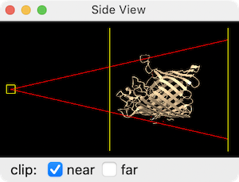

|  |
The Side View tool provides an intuitive way to zoom
the view and to control the near and far clipping planes,
which always remain perpendicular to the line of sight.
For rotatable (front and back) clipping planes, see the
clip command.
See also:
cofr,
zoom,
camera,
mousemode


The Side View can be opened from the Tools menu
or by clicking the Graphics icon
 .
Like other tools, it can be
moved, resized, etc.
.
Like other tools, it can be
moved, resized, etc.
The clip checkboxes indicate whether the near and/or far clipping planes are active.
If the interactive response becomes slow with very large structures or other copious or large data, closing the Side View may help by reducing the rendering load.
Capping of clipped surfaces can be controlled with a preference setting and/or the surface cap command.